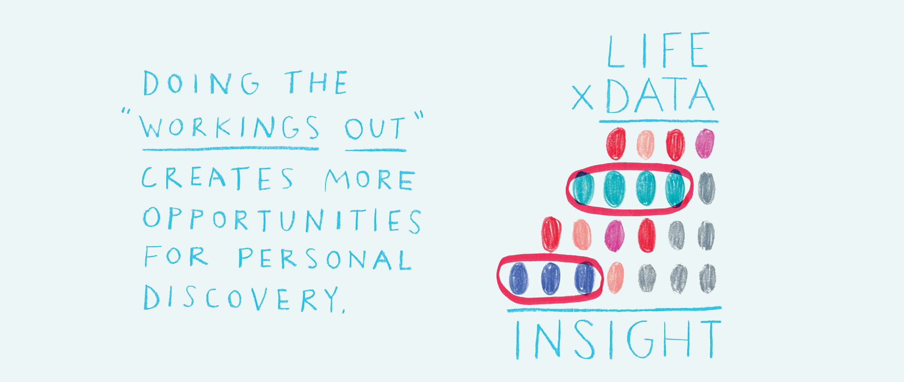
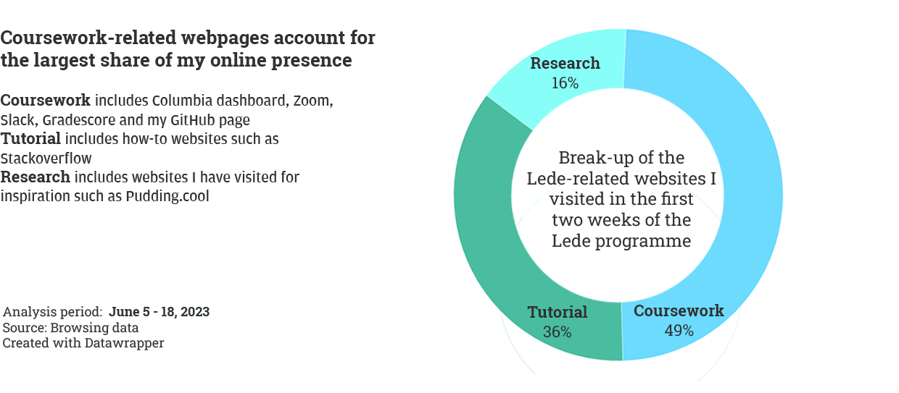

How I thought my browsing history changed with the Lede Programme
By Rajit Sengupta
Besides finding data in the world around us, we are all creating data just by living: our purchases, our movements through the city, our explorations across the internet, all contribute to the "data trail" we leave in our wake as we move through life. This data is being collected, counted, and computed - both on a massive scale by companies and institu tions seeking insights and answers - and on a smaller scale by individuals seeking to understand more about themselves, using data to "quantify" the self and become more efficient, optimised humans.
- Georgia Lupi and Stefanie Posavec (Dear Data)

Before diving deep into the ocean of big data around us, for the first project of the Lede programme, I decided to quantify and assess my personal data to capture the after-effect of the programme. The online nature of my attendance has been a major factor that has impacted my engagement with the course and has drastically changed my online presence. Two weeks into the 10-week course, the time and manner of my engagement with the internet have undergone a sea change.
Understanding and becoming conscious of this change is what this project and these visualisations are all about. In order to understand the programme’s impact on my daily life, I decided to decode/analyse my web browsing history two weeks before and two weeks after joining the programme. Before beginning the programme some of the browsing was in anticipation and preparation for the programme and the rest was focused on casual browsing for entertainment. As soon as the programme began, the nature as well as the intensity of my internet presence changed dramatically.
For instance, Pythons and Pandas have guided me down the rabbithole of the Github world, which has meant a lot more time spent exploring that land of mysteries online. It is definite that I am spending much more time online now, but the analysis has thrown up some surprises even for me.

In the two weeks leading up to the programme, I would, on average, visit 37 unique webpages a day. Two weeks into the programme, the daily average webpage number almost tripled to 93. Before the programme began, the highest number of page visits were recorded on May 24, when I was working on a personal project. If we do not include this day (as it is an aberration), then the average daily webpage visit before the programme drops to 25. The six days with the highest webpage visits after May 24 were all recorded after the programme started. There is also an increasing pattern in the daily graph, where I see that each spike (days with high webpage visits) is followed by an ebb (days with fewer webpage visits). Finally, the graph clearly shows a linear increase in the number of unique webpages I visited over time. In fact, the days with the lowest number of webpage visits were the first four days. This could be because I spent the bulk of the time replaying certain class recordings.

I have further looked at the websites (not webpages) I visited in the first two weeks and found some interesting observations. I did this as many times as I visited multiple webpages of a website, and I thought using a website made more sense here. I had initially thought that the bulk of the increase in my web browsing would be related to the programme. However, only a little more than half of the websites I visited were related to the course. The remaining half was general surfing. This data is insightful as well as surprising to me. Because of the time difference between the East Coast and Delhi, the classes take place between late evening and mid-night for me. After the classes are over, I generally sit through the night to complete as much of the homework as possible. Suffering from sleepless nights, I was sure that most of my time was being spent on class-related surfing/internet activity, but the data clearly shows that almost an equal amount of time has been spent on entertainment/casual surfing. In fact, on four days, I visited more general-interest websites than those related to the Lede programme. I was clearly compensating more than I realised!

For a more in-depth analysis, I have broken down the Lede-specific websites into three categories: coursework websites, tutorial websites, and research websites. As expected, 49% of the websites I visited were pertaining to coursework, which includes the zoom classes, the programme dashboard, my Github page and gradescore. Tutorial websites, which include online resources that I consulted to understand the classwork, accounted for 36% of the websites. The remaining 16% of websites were those that I came across during interactions with trainers, teaching assistants and fellow students. This includes a series of Pudding articles and NYT stories, among others.
Challenges I faced
I use Safari as my primary browser and while importing the history, I realised the browser does not record the time spent on the websites. I personally think the time spent on the website could have helped me add another layer to better understand the web browsing pattern and could have given me more insights.
After several failed attempts to import the history directly into Python, I finally used sqlite, a database engine written in the C programming language, to convert Safari’s history file (that has a .db extension) into CSV and then carried out the analysis using Pandas and a bit of excel.
Clearly, I am still waiting for the soup to become beautiful.
Cover image is sourced from Dear Data